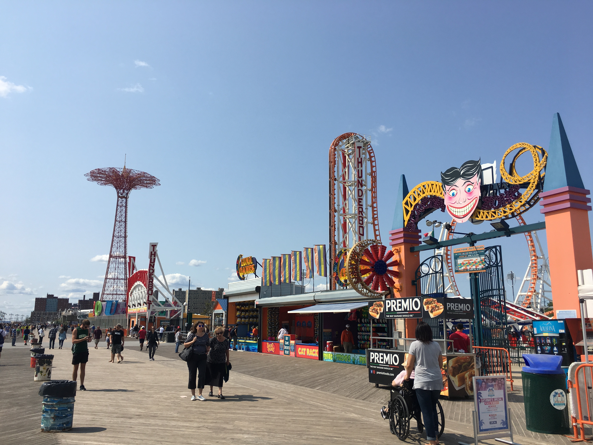
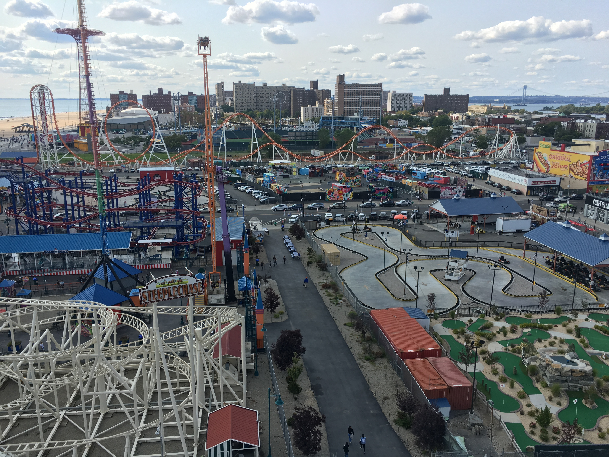

Luna Park
What's special about this place is that it's the only amusement park in the five boroughs. It has more history than some of the most historic places in Brooklyn. Coney Island was famous for it's beach, but Luna Park (formally known as Astroland) made it famous for it's history. It's one of the only amusement parks to have a beach right next to it which as a kid gave me joy. This place is special to me because on Summer vacation my mom would take me and my brothers there to enjoy the day. I spent a lot of time at that park and the memories I made there will forever be with me.


Luna Park is the name of an amusement park in the neighborhood of Coney Island, Brooklyn in New York City that opened on May 29, 2010, at the former site of Astroland, an amusement park that had been in operation for 46 years. It was named after the original 1903 Luna Park which existed until 1944 on a site just north of the current park's 1000 Surf Avenue location. The park was designed, developed, and operated by Central Amusement International, LLC (CAI), a subsidiary of the Italian company Zamperla which built 19 new mechanical rides for the park. There are also interactive games, food and beverage concessions, and live entertainment.Luna Park's entrance is patterned after the entrance to the original 1903 Luna Park and was built on the ground of the former Astroland amusement park. The new park is the home of nineteen new attractions and games. It is the only area in Coney Island in which the use of cash to pay for amusements and rides is not allowed; visitors must buy Luna Cards and spend Luna Credits or use an unlimited ride wristband that allows for four hours of ride time on select rides. Throughout the park variations of the Coney Island "Funny Face" logo can be seen. The logo, from the early days of George C. Tilyou's Steeplechase Park, has been around for a hundred years.